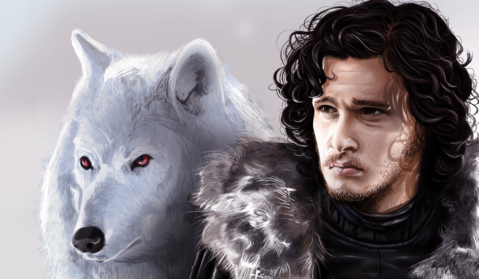

Jon Snow
El Rey en el Norte

El Rey en el Norte
La Madre de Dragones
El Imp

La Niña sin Rostro
La Reina Malvada
El Matarreyes
La Dama de Invernalia
El Cuervo de Tres Ojos
El Príncipe Ahogado
La Sacerdotisa Roja
Estos son solo algunos de los muchos personajes memorables de Game of Thrones